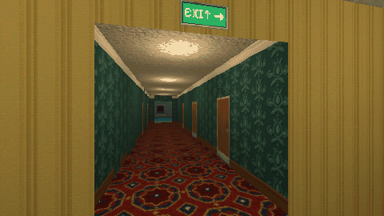

Tutorials › Build a PS1-Style Liminal Room
How to Build a PS1-Style Liminal Room in Godot 4
Crisp PS1 textures, a metre scale, office light and a low-resolution PSX look.

Five steps to the PS1 look for liminal spaces: import textures lossless with mipmaps, filter them nearest with mipmaps, keep 64 px per metre, light the room like an empty office, and render it at a third of the window size for the PSX look.
Script: liminal_room.gd (MIT) · Godot 4.3 or newer · its folder on GitHub
How to use it
- Set these import defaults in
project.godot, so Godot does not compress the small palette textures: ``ini [importer_defaults] texture={ "compress/mode": 0, "detect_3d/compress_to": 0, "mipmaps/generate": true }`` - Take the functions you need from
liminal_room.gd:liminal_material(path, size_m)for a mesh with UVs,blockout_material(path)for CSG boxes of any size (world-space, one repeat every 2 m),ceiling_lamp(position)andpsx_viewport(world, shrink).
What it needs
- Textures at 64 px per metre: a 128 x 128 px texture covers a 2 x 2 m cell.
Try it free
The Liminal PSX Textures - Free Sampler has 12 of the textures (9 seamless) and a showcase with the PSX shaders.
How it was tested
Checked with godot --headless --check-only in Godot 4.3 and 4.7.2.
The code
extends Node3D
## How to Build a PS1-Style Liminal Room in Godot 4
## Cordatix Godot 4 PSX tutorials, MIT licensed: https://github.com/GoldenSparrow-Dev/cordatix-godot-psx-tutorials
## The devlog: https://cordatix.itch.io/liminal-psx-textures/devlog/1710627/how-to-build-a-ps1-style-liminal-room-in-godot-4-liminal-psx-textures
func liminal_material(path: String, size_m: Vector2 = Vector2(2.0, 2.0)) -> StandardMaterial3D:
var mat := StandardMaterial3D.new()
mat.albedo_texture = load(path)
mat.texture_filter = BaseMaterial3D.TEXTURE_FILTER_NEAREST_WITH_MIPMAPS
mat.roughness = 1.0
# every texture covers 2 x 2 m, so a 6 x 3 m wall repeats it 3 x 1.5 times
mat.uv1_scale = Vector3(size_m.x / 2.0, size_m.y / 2.0, 1.0)
return mat
func blockout_material(path: String) -> StandardMaterial3D:
var mat := StandardMaterial3D.new()
mat.albedo_texture = load(path)
mat.texture_filter = BaseMaterial3D.TEXTURE_FILTER_NEAREST_WITH_MIPMAPS
# world-space projection: one repeat every 2 m, whatever the size of the box
mat.uv1_triplanar = true
mat.uv1_world_triplanar = true
mat.uv1_scale = Vector3(0.5, 0.5, 0.5)
return mat
func ceiling_lamp(pos: Vector3) -> OmniLight3D:
var lamp := OmniLight3D.new()
lamp.position = pos
lamp.light_color = Color(1.0, 0.95, 0.8)
lamp.light_energy = 1.1
lamp.omni_range = 6.0
add_child(lamp)
return lamp
func psx_viewport(world: Node3D, shrink: int = 3) -> SubViewportContainer:
var container := SubViewportContainer.new()
container.stretch = true
container.stretch_shrink = shrink
container.texture_filter = CanvasItem.TEXTURE_FILTER_NEAREST
container.set_anchors_preset(Control.PRESET_FULL_RECT)
var vp := SubViewport.new()
container.add_child(vp)
vp.add_child(world)
return container
The devlog and the pack
The step-by-step walkthrough is the devlog How to Build a PS1-Style Liminal Room in Godot 4 (Liminal PSX Textures) on itch.io, written for Liminal PSX Textures, a PS1-style asset pack by Cordatix for Godot 4, Unity, Unreal and Blender.